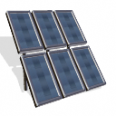

Solar array
All colony improvements that are used to produce goods need energy to
run. Cheapest way to supply this energy is to build a solar array.
This improvement produces 100 units of energy each turn, which will be
enough to power early manufacturing buildings.
